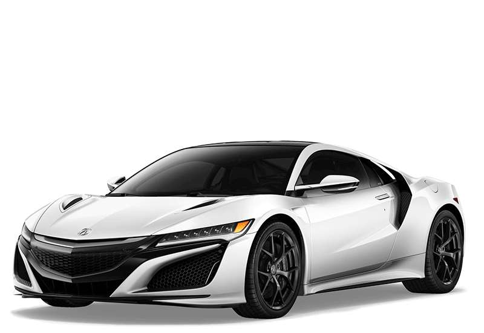
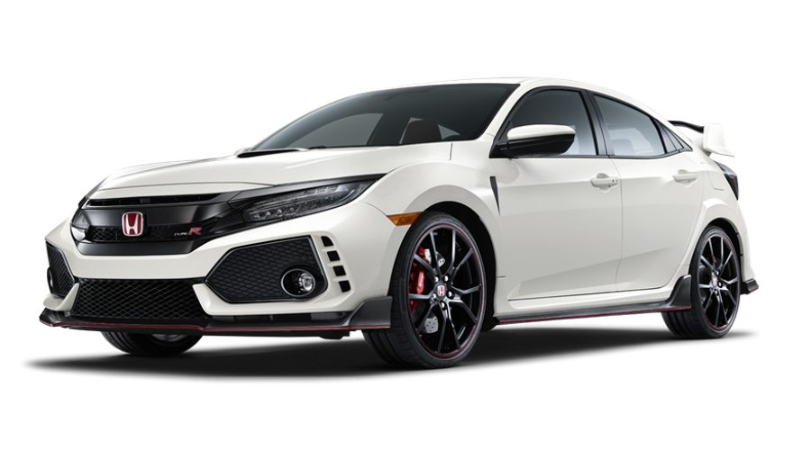
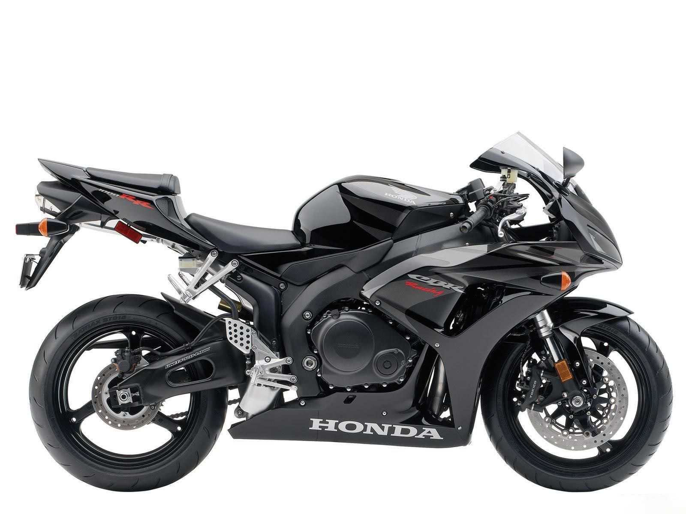
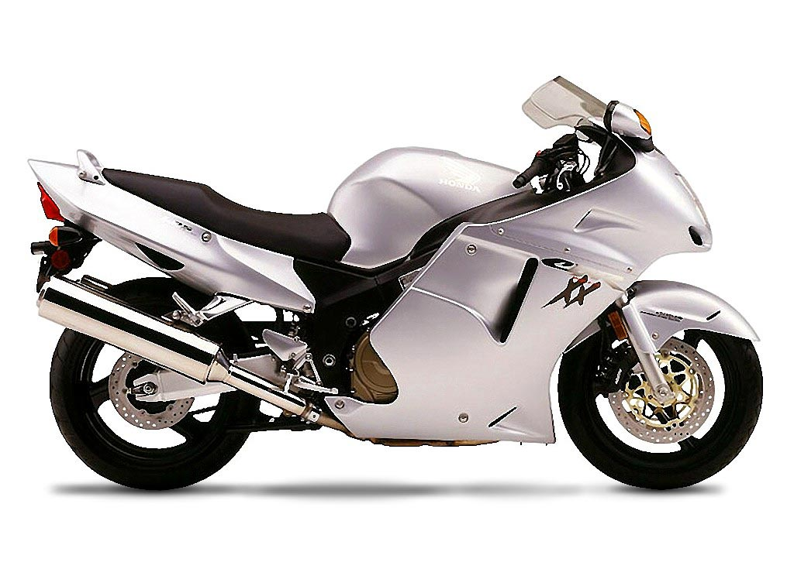

A place to discover Honda Pictures

The Acura NSX is a rare Sports car due to it's Hybrid engine.

The Honda Civic Type R goes 0-60 in 5 second while its competitor, Subaru WRX, is 6.2 seconds.

The Honda CBR 600 top speed is 155 mph

The Honda CBR1100xx Super Blackbird was once the fastest production bike in the world (1997).